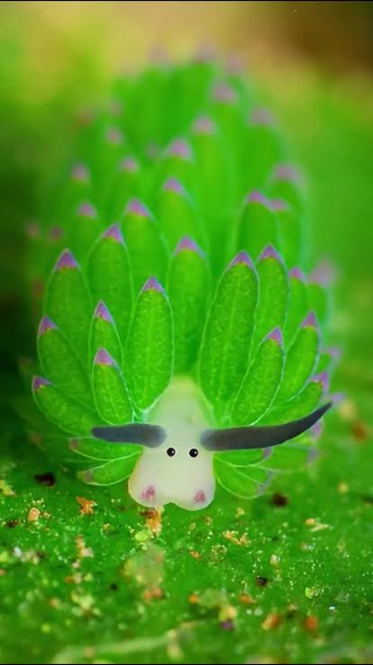

🏠
🏠
BORREGUITA DE MAR
Costasiella kuroshimae

una diminuta y adorable babosa marina que habita en los arrecifes de coral del Indo-Pacífico, cerca de Japón, Filipinas e Indonesia
¿por que es verde?
Una de sus características más interesantes es que puede realizar cleptoplastia. Esto significa que, al comer algas
puede conservar algunos de sus cloroplastos —las estructuras que permiten realizar fotosíntesis
dentro de sus tejidos durante cierto tiempo. 🌿
INFORMACION
NOMBRE COMUN: Borreguita marina o babosa marina oveja.
NOMBRE CIENTIFICO: Costasiella kuroshimae.
TIPO DE ANIMAL:Molusco, específicamente un nudibranquio.
TAMAÑO: Generalmente mide alrededor de 5 mm, aunque algunos ejemplares pueden alcanzar cerca de 1 cm.
HABITAT: Vive en aguas tropicales del Indo-Pacífico, especialmente cerca de Japón, Filipinas e Indonesia.
ALIMENTACION: Se alimenta principalmente de algas.
APARIENCIA: Tiene pequeñas estructuras en la cabeza que parecen orejas de oveja y dos ojos negros que hacen que parezca una diminuta ovejita.
COLOR Suele ser verde, blanco o amarillento, dependiendo de su alimentación y del ejemplar.
ingresa aqui para ver un video de la borreguita de mar